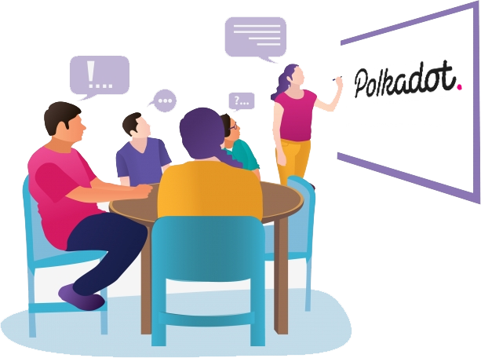

ConnectDeFi
Fully decentralized and community-led platform.
Who we are?
Decentralized Finance (DeFi) has brought with it many benefits to the holistic cryptocurrency ecosystem, as well as a lot of demands. The DeFi ecosystem needs platforms that will capture exchange and liquidity demands, yield farming and staking, as well as portfolio management.
While there are several platforms filling these individual needs, it is cumbersome and sometimes impossible to use them efficiently since each is specific and narrow in what it offers. The fragmented nature of these services continues to be a major obstacle to the adoption of DeFi.
ConnectDeFi aims to bridge these gaps by providing a single gateway, combining all these services into one easy-to-use platform. ConnectDeFi will function as an aggregator for decentralized exchanges (DEX),covering liquidity, yield farming and staking, while implementing a dedicated portfolio manager, and multichain decentralized wallet.

Our Services
Decentralized exchange and Liquidity Aggregator
ConnectDeFi will compare liquidity pools of every decentralized exchange to provide traders with both best price and liquidity depth allowing users to easily decide the best way to trade tokens.
Yield Farming and Staking Aggregator
ConnectDeFi is designed to collect data points from various DeFi protocols with respect to individual ROI, allowing users to decide what is more profitable, almost effortlessly.
Portfolio Management
ConnectDeFi assists by tracking assets across multiple wallets, while providing the exact value of all holdings.
Multichain Wallet
ConnectDeFi will function as a wallet, supporting multiple assets, including Bitcoin, various Ethereum standards, and various other public blockchains.
Operational Framework
The ConnectDeFi platform is powered by the Polkadot Network.
Benefits of Building on the Polkadot Network
There are multiple methods to achieve interoperability but Polkadot is unparalleled in this area. The structure includes a central relay chain that all individual blockchains connect to, the parachains run in parallel, while also utilizing bridges that connect to blockchains that do not use Polkadot protocols.
Polkadot achieves high scalability by enabling a common set of validators to secure multiple blockchains. This shared security strategy is reliable compared to first generation smart contract platforms such as Ethereum 1.0 that is prone to significant network congestion and scaling frictions.
Polkadot Network is powered by Substrate, an open-source framework that allows for building configurable blockchains in a minimal time.
Polkadot’s governance is based on a Decentralized Autonomous Organization (DAO), which democratically confers on shareholders the rights to form a consensus on critical decisions.

Token &
TokenThe platform issues its own native utility token, $CDF. This token powers the entire ConnectDeFi ecosystem, where it’s used for transaction fees and incentives, as well as governance.
Governance
ConnectDeFi is a fully decentralized and community-led platform; hence the DAO makes all major decisions for the platform. Examples of such decisions include:
Token Metrics
1 billion $CDFCONNECT tokens will be minted at TGE.
Roadmap
Team Establishment
Feasibility with regards to roadmap targets
Official website online
Refinement of ConnectDeFi Architecture
Initial Marketing Activities
Asset management security Audit
Initialization of Development: Liquidity and DEX aggregators
Conceptualization of the Idea
Initial feasibility and testing of concept
Feature architecture and rollout timelines
Private sale fundraising round
Development of the Asset/Portfolio management tool(s)
Launch of Asset Management tool MVP
Updated landing page app (Asset Management tool)
More...
Join us in building the efficiency of decentralized finance together!
The referral program aims to drive widespread adoption of the platform by rewarding users accordingly. Anyone can take advantage of this program by generating unique links to invite others.
By joining this lucrative referral program, you help promote not just the platform, but the entire DeFi ecosystem.